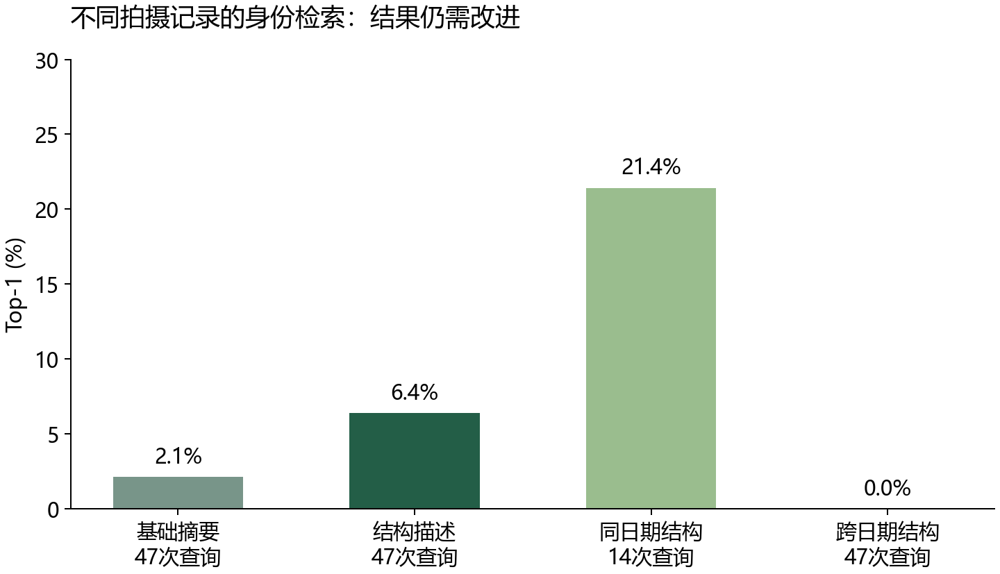
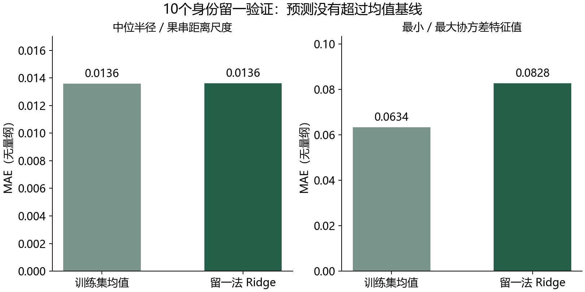

77主要拍摄任务 · 原始成果复用
73 / 46评价任务 / 身份标签
10五月 → 七月纵向身份对
待核查Agnes 专业任务执行证据
球模型与实测点云
拖动旋转 · 滚轮缩放。橙色为估计球体，灰绿色为实测点云抽样。
结构指纹检索
独立拍摄记录中的前五候选
| 排名 | 样本 / 身份 | 距离 |
|---|
自动排除查询自身、同源视频、完全相同球模型以及标签冲突项。排名为探索性建议，不能代替人工确认。
真实拍摄记录的身份检索

整体评价 47 个有独立同身份图库样本的查询，其余身份作为干扰项。固定描述方案，没有按测试结果调权。
当前能力边界
跨日期检索尚未可靠工作，不能据此宣称实现了可用的葡萄防伪识别。
输入与样本审查
- 四个条目有完全重复的视频但身份标签不同，正式评价排除。
- 球心和半径来自重建及人工修改，尚未获得逐粒农业真值。
- 整体旋转和平移/缩放不变性仅是合成数学检查。
10个身份的跨期相对形态
不同拍摄的 COLMAP 坐标尺度独立。以下是无量纲形态比较，不是毫米、实际体积或生长倍率。
留一身份预测
只用早期特征预测晚期形态指标。每折将一个葡萄身份完全留出，标准化只使用其余九个身份。
当前 Ridge 预测两个指标均未超过训练集均值基线。
探索性预测与简单基线

目标值仍是晚期球模型的估计指标，样本量为10个身份。预测结果不等同于经验证的真实生长预测。
Agnes 根据工具结果连续执行专业任务
01
读取数据范围
核对可用样本、重复视频和模型限制。
grape_inventory02
提取与检索
计算球模型描述，检索独立拍摄候选。
grape_describe / retrieve03
验证与反馈
计算真实检索指标和身份留一预测。
grape_evaluate / forecast04
生成报告
根据返回数值说明结论、失败与适用范围。
grape_report真实运行记录
专业任务记录尚待生成。
模型负责任务规划和解释，专业数值由固定代码计算。AGH 保留工具参数、返回与任务历史。